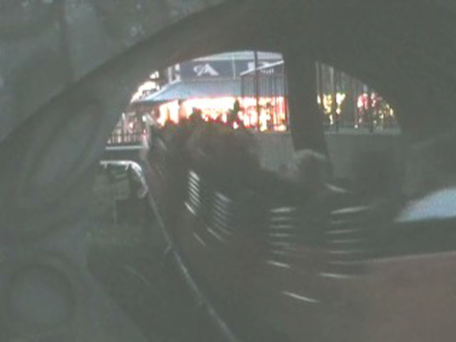

| |
Marche du Mille Pattes Review

We're here at La Ronde. For their kiddy coaster, La Ronde has Marche du Mille-Pattes. After cramming into the seats, you're off. It's a very short climb to the top. Once you reach the top, you go through a few turns and maybe a dip or two. Nothing that special for a kiddy coaster. Then after a turn comes the scariest part of the ride. The part you can see from the bridge. The drop. Wee. The drop is so scary (In case you're too stupid to tell, I'm being sarcastic). Afterwards you go through a couple turns that provide some decent laterals for a kiddy coaster. And then it's back to the station. I would only recommend riding this if you are a credit whore. Oh, I forgot to mention. You can't ride this ride unless you're accompinied by a kid. So keep that in mind.
3/10
Location: La Ronde
Opened: 1967
Built by: Arrow
Last Ridden: August 5, 2008
I have ridden this exact same ride at the following parks.
Six Flags Over Texas
Marche du Mille-Pattes Photos
Home
|